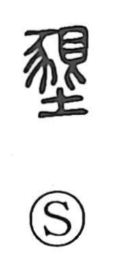

墾

Kun: hiraku, tagayasu | On: kon
reclaim land ・ cultivate ・ till ・ reclamation
Explanation
A phono-semantic character: the phonetic element is 艮, which carries the on-yomi kon and originally evoked a hard, glaring look that halts advance, hence a sense of anger or intensity. The semantic element is 豕, the wild boar. In ancient imagery, a raging boar tears up soil and crops with its tusks; from that vivid act comes the idea of breaking ground—digging up the earth to till and cultivate it. Thus 墾 came to mean plowing and reclamation, the opening of woodland or plains into arable fields, as seen in words like kaikon, “land reclamation.”